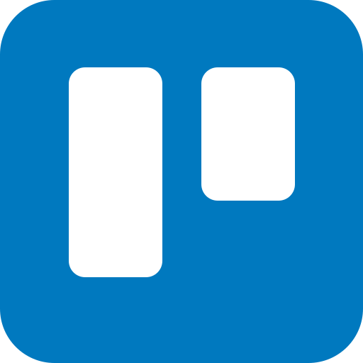
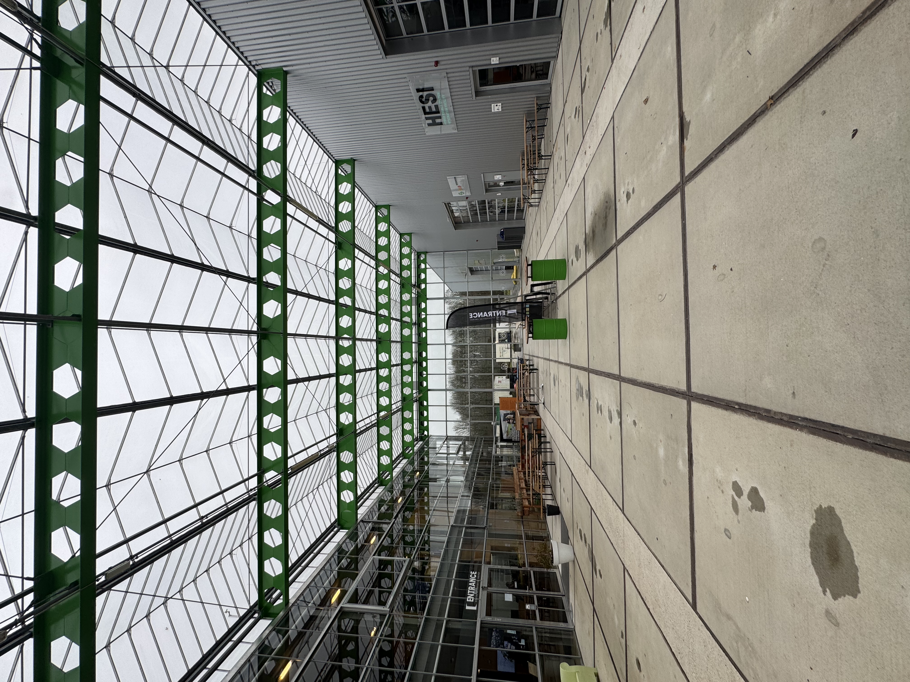
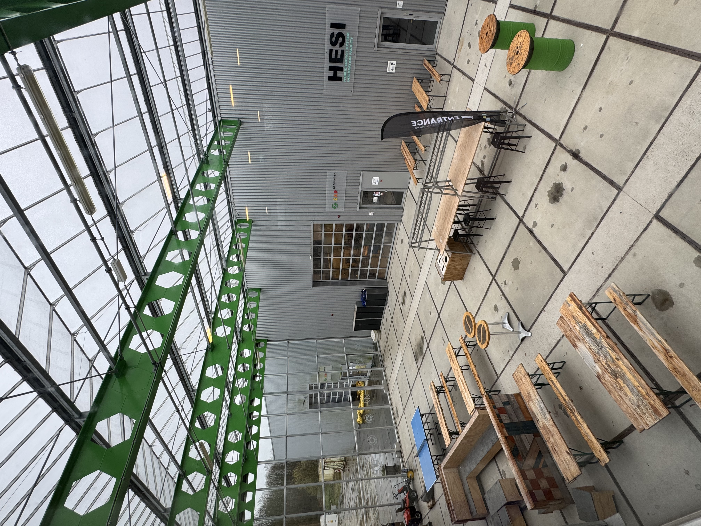
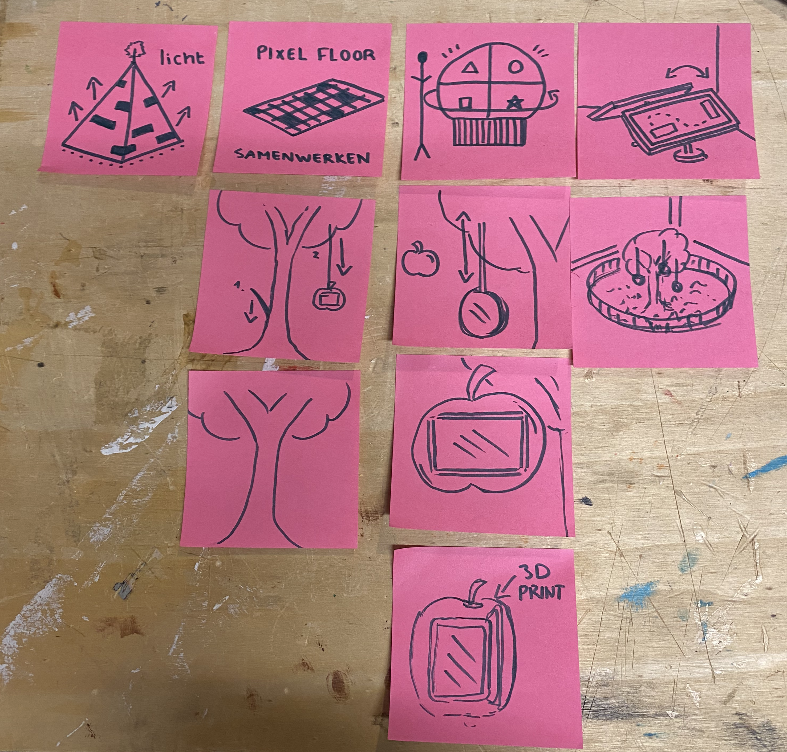
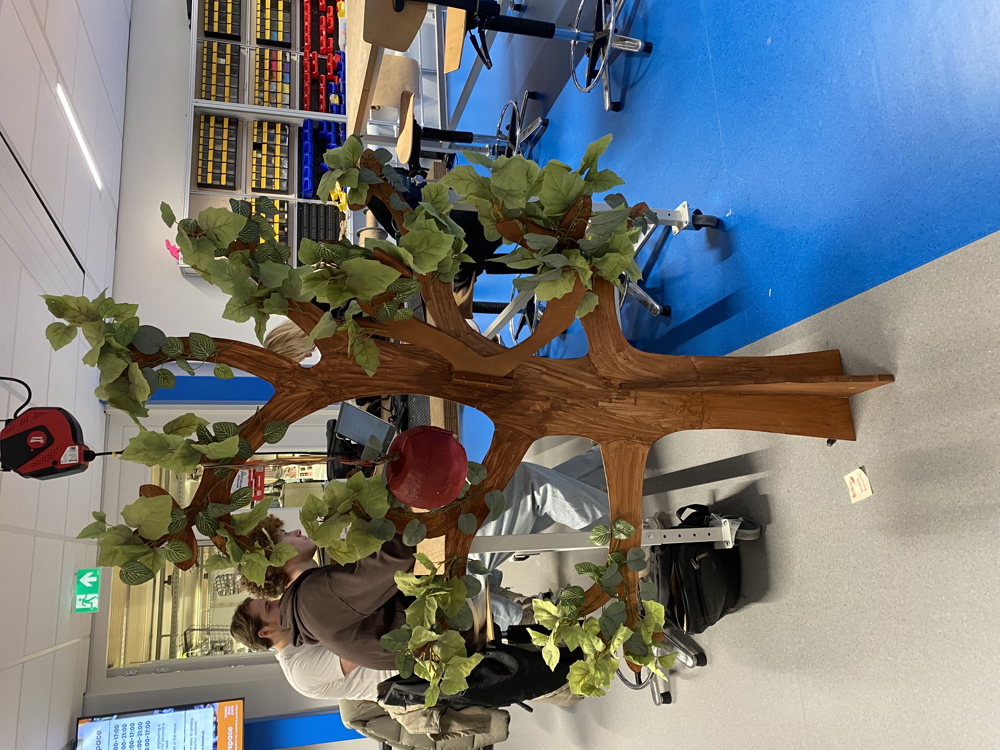
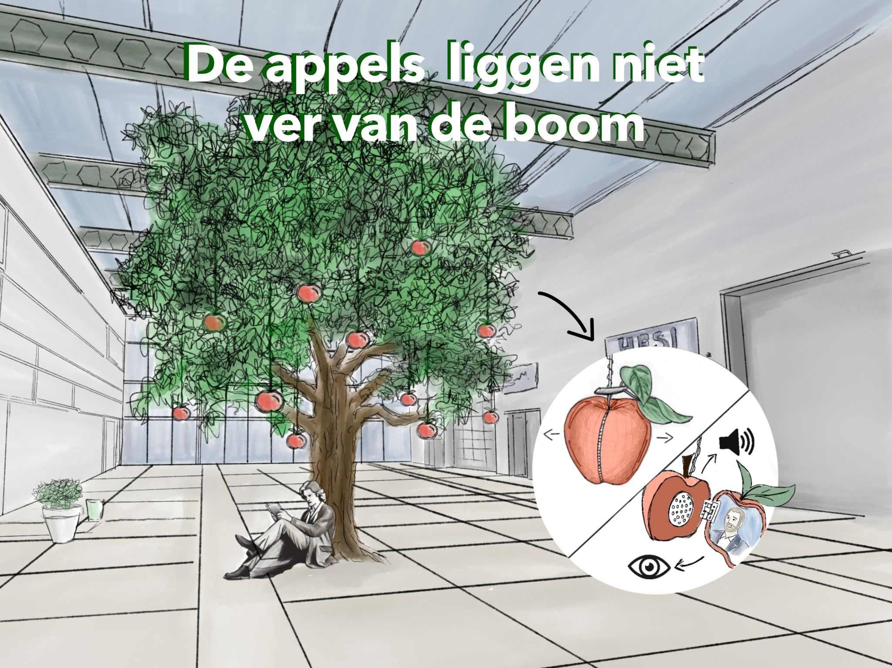
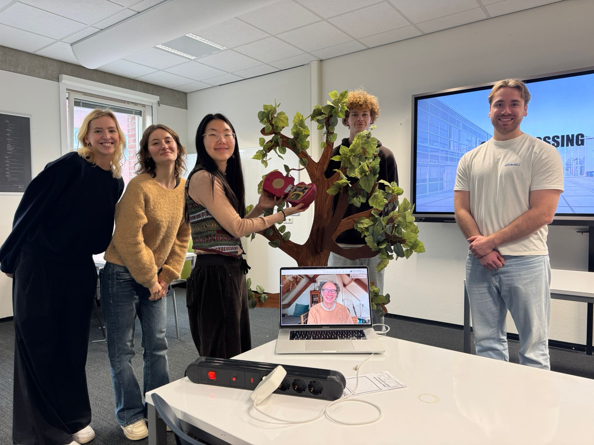

Silo’s doorbreken – Interactieve installatie voor Entrance
In het kort
Hoe breng je een hal vol technische innovatie tot leven?
Bij Entrance (het energie-innovatiecentrum van de Hanze) wordt veel samengewerkt, maar de verschillende lectoraten weten vaak niet van elkaar waar ze precies mee bezig zijn. In opdracht van Strawberry Fields ontwierp ik samen met mijn team een interactieve installatie die deze verbindingen letterlijk laat groeien en verhalen tussen de afdelingen deelt.
Tools


Het probleem
Binnen Entrance gebeurt ontzettend veel, maar de cultuur is de laatste tijd technocratisch en bureaucratisch geworden. Lectoraten werken vaak op hun eigen eiland, waardoor onderzoeken en samenwerkingen onzichtbaar blijven voor de rest van het gebouw. Er ontbreekt een overzicht en mensen ervaren het grotere geheel van Entrance niet meer, terwijl multidisciplinair samenwerken juist de kern is.



Mijn aanpak
Dit project draaide om het doorbreken van het werken in silo's en het terugbrengen van serendipiteit (onverwachte ontdekkingen).
Onderzoek
Uit interviews bleek dat mensen sneller geprikkeld worden door interactie dan door veel tekst lezen. We moesten dus iets maken dat echt uitnodigt tot ontdekken.
Ideatie
Via Crazy Eights kwamen we op de boom als metafoor voor groei en innovatie. Binnen het team was ik samen met Janine verantwoordelijk voor de vormgeving, de grootte en de stabiliteit van de fysieke boom.

Iteratie
Mijn taak was om abstracte ideeën om te zetten in een werkend model. Door constante feedback binnen het team en tussentijdse tests hebben we het prototype steeds verder verbeterd, zodat de boom ook echt uit de dagelijkse werksfeer van de locatie springt.


De oplossing: De appels liggen niet ver van de boom
De installatie nodigt bezoekers, studenten en medewerkers uit om op een speelse manier naar innovatie te kijken, geïnspireerd door het verhaal van Isaac Newton.

1. Plukken om te verbinden
Wanneer een bezoeker een felrode appel plukt door deze naar beneden te trekken, start de interactie. De appel opent in twee helften: in de ene helft zie je een beeld van een medewerker en in de andere helft hoor je via een speaker hun persoonlijke verhaal over een onderzoek. Mijn gedachte hierachter was om informatie fysiek te laten ontdekken in plaats van het passief van een scherm te lezen.


2. Serendipiteit stimuleren
In plaats van lange teksten, creëren we ruimte voor nieuwsgierigheid. Onder de boom zit een figuur van Newton met een korte call-to-action. Dit helpt om de drempel te verlagen. De handeling van het openen maakt de ervaring laagdrempelig en omdat de appels en verhalen makkelijk te vervangen zijn, blijft de installatie steeds verrassen. Dit zorgt ervoor dat mensen elke keer opnieuw komen kijken en weer met elkaar in gesprek gaan over het grotere geheel van Entrance.
Resultaat & reflectie
De installatie maakt complexe informatie begrijpelijk en stimuleert nieuwsgierigheid. Het versterkt ook het communitygevoel doordat medewerkers hun eigen werk erin herkennen. Entrance was ontzettend enthousiast over het concept, waardoor we nu bezig zijn met het uitbreiden van de installatie naar een complete ervaring in de ruimte, inclusief banken, muziek, een muurschildering en workshops.
Wat ik heb geleerd:
- Mensen samenbrengen: Ik heb geleerd hoe je met een ontwerp echt voor een wij-gevoel zorgt. Door mensen uit hun eigen bubbel te halen en ze met elkaar te laten praten, zie je pas wat een goed ontwerp voor een groep kan betekenen.
- Impact door je zintuigen: Ik heb geleerd dat een verhaal veel beter binnenkomt als je mensen niet alleen tekst laat lezen, maar ook echt iets laat horen of doen. Door die interactie trek je mensen echt even uit hun werkdag. Het maakt het hele verhaal een stuk levendiger en persoonlijker.
- Itereren tot het staat: In de praktijk is het bouwen van een boom wel even iets anders dan een ontwerp op je scherm. Ik heb nagedacht over de stabiliteit, zodat de boom stevig blijft staan als mensen de appels openen. Door te blijven itereren, ontdekte ik precies welke materialen nodig waren om de installatie veilig en makkelijk bruikbaar te houden.
